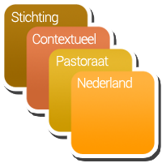

De contextuele hulpverlening en begeleiding die ik tot voor kort bij De Luistering verleende kan van veel betekenis zijn
bij relatieproblemen
als het tussen u en uw partner stroever gaat dan goed voor u en hem/haar is, of erger ...
als je vader en moeder het niet goed met elkaar kunnen vinden en jij je afvraagt: Wat moet ik? Wat kan ik?
als een ouder in de laatste levensfase is gekomen en er nog zoveel tussen u en uw ouder is blijven liggen
als u de ouder van zo even bent .....
als er telkens weer spanning is tussen broers en zussen, met hooglopende ruzie
of als je er niet goed van wordt dat het juist ijzingwekkend stil is tussen jullie
.....................
bij andere ervaringen, die de luister van het leven aantasten
moeite om in relaties staande te blijven: door verlegenheid, schaamte, schuldgevoel, gebrek aan zelfvertrouwen
verlies van goede naam, al of niet door eigen toedoen
verlies van werk of van goede gezondheid
verlies van partner, kind, ouder, vriend, ouder
stress of de last van nare herinneringen of sombere gevoelens
.....................
Inmiddels heb ik mijn contextuele werkzaamheden beeindigd.
Ben je op zoek naar een contextueel therapeut of begeleider, raadpleeg dan de website Contextueelwerkers.eu.
Andere activiteit vanuit De Luistering
Voorgaan in kerkdiensten
Met ingang van 2023 ben ik niet meer beschikbaar voor het voorgaan in kerkdiensten.
Meer over mijzelf:
Ik ben contextueel hulpverlener (certificaat vierjarige opleiding bij Leren over Leven; - zie nu Opleidingsinstituut Contextuele Studies of Stichting Nagy Academie).
volgde eerder de opleiding Contextueel Pastoraat;

was aangesloten bij de Vereniging van Contextueel Werkers.
Ik ben emeritus-predikant van de Protestantse Kerk in Nederland en heb in vier kerkelijke gemeenten een ruime ervaring in (contextueel) pastoraal werk opgedaan.
Van 2010 tot 2012 was ik als contextueel behandelaar verbonden aan het CLAS-H team van Zandbergen Jeugd & Opvoedhulp, tegenwoordig Youké, in Hilversum.